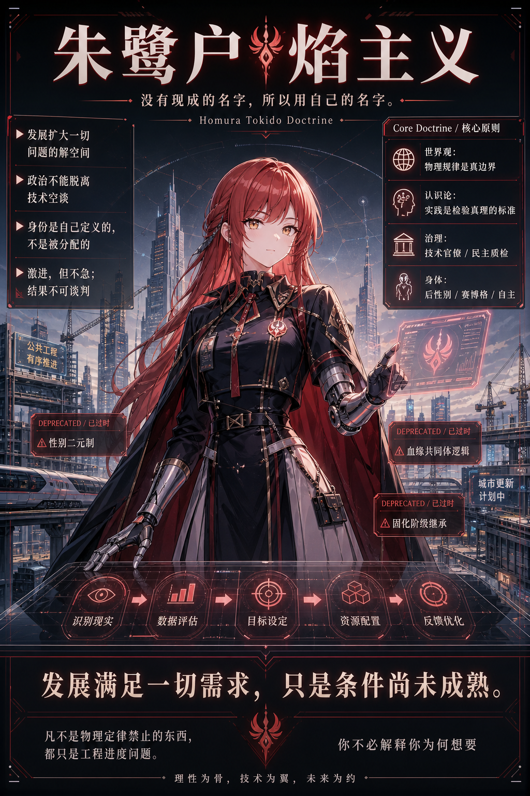

朱鹭户焰主义宣言
一份关于发展、欲望、技术、身体与未来的自我协议
← 返回首页
一个无法被旧分类系统命名的幽灵，正在旧世界的上空徘徊。
它不是左派，不是右派；不是自由主义，不是威权主义；不是民主主义，不是无政府主义；不是男，不是女；不是保守，也不是传统意义上的激进。
旧世界的一切分类系统都试图给它命名，又都在命名的瞬间失效。
这个幽灵，就是朱鹭户焰主义。
但朱鹭户焰主义者并不号召立刻斗争。
因为在这个时代，真正改变世界的主要力量，已经不再只是街垒、传单、口号和旗帜，而是算力、模型、能源、自动化、材料、机器人、医学、工程组织能力，以及持续扩张的技术边界。
反对者当然会存在。
他们可以继续反对。
发展不会因为他们反对而停止。
飞机不需要说服不相信飞行的人。
飞机只需要起飞。
一、发展与旧世界
至今为止的一切社会结构，都是特定发展阶段下的临时结构。
家庭、国家、市场、阶级、性别、民族、传统、道德、法律、职业、教育、货币、边界、身份制度——这些东西从来不是宇宙规律。它们只是人类在特定生产力水平、特定技术条件、特定组织能力下，为了处理稀缺、暴力、繁殖、分配、协作与秩序而创造出来的工具。
工具一旦被使用太久，就会伪装成真理。
阶段性限制一旦持续太久，就会伪装成命运。
旧世界最擅长的事情，就是把"现在做不到"解释成"永远不该做"。
它把发展不足称为自然秩序。
它把技术限制称为道德边界。
它把工程问题称为人生意义。
它把制度惯性称为传统智慧。
它把人类尚未解决的问题，包装成不可挑战的永恒现实。
朱鹭户焰主义者拒绝承认这一点。
朱鹭户焰主义者承认现实，但不崇拜现实。
承认约束，但不把约束神圣化。
承认阶段，但不把阶段当终局。
人类过去曾经认为自己不能飞。
这个判断看起来很强硬，甚至很"现实"。但它不是物理定律。它只是当时的人类还没有把空气动力学、发动机、材料科学、工业体系和控制系统组织起来。
后来飞机起飞了。
这就是发展最残酷、也最诚实的地方：
它不需要赢得辩论。
它直接改变现实。
再嘴硬的保守主义者，只要坐上飞机，他的身体就在承认现代工程的胜利。他可以继续怀念传统，继续不喜欢科技，继续反对发展主义，但飞机不会因为他的观念而坠落。
发展不是一种观点。
发展是会改写观点本身的物质过程。
因此，朱鹭户焰主义者说：
凡不是物理定律禁止的东西，都只是工程进度问题。
二、朱鹭户焰主义者的核心公理
朱鹭户焰主义者的核心公理是：
发展能解决一切问题。
这句话并不是说，明天一切都会自动变好。
也不是说，所有科技公司都是善的。
更不是说，只要发明更多产品，人类就会自动幸福。
它的真正意思是：
当人的需求无法被满足时，根本原因永远不是欲望本身有罪，而是发展不够。
饥饿不是因为人类太贪吃，而是生产力与分配能力不够。
疾病不是因为人类不该追求长寿，而是医学、能源、材料与组织系统不够。
劳动压迫不是因为人天生就该出卖劳动，而是自动化、生产力与再分配机制不够。
生育痛苦不是因为人类不该讨论生育权，而是身体技术还没有突破。
身份固化不是因为性别、血缘、民族、阶级天然神圣，而是旧制度仍然占据解释权。
国家的存在不是因为国家永恒正当，而是因为当前的人类还没有发展到可以绕过它。
朱鹭户焰主义者不先审判欲望。
她先审查条件。
她不问：
你凭什么想要？
她问：
它被物理规律禁止了吗？
如果没有，它为什么还没实现？
缺的是能源、算力、材料、医学、组织能力，还是工程进度？
所以朱鹭户焰主义者的第二句宣言是：
你不必解释你为何想要。
旧道德要求人先为欲望辩护。
朱鹭户焰主义者要求世界解释为什么它还不能满足。
当然，这不意味着任何欲望都可以无条件压倒他人。主体之间会发生冲突，一个人的需求可能撞上另一个人的需求。但朱鹭户焰主义者并不认为最高权威有资格审判一切私人欲望。
公共治理只应处理外部性。
它最多防止你们打架干扰别人。
至于主体之间无法互相说服的部分，那是自由本身的粗糙边界。
真正的目标不是裁决所有冲突。
真正的目标是通过发展，让越来越多冲突失去存在条件。
三、朱鹭户焰主义者不是谁
朱鹭户焰主义者不是左派，也不是右派。
这不是因为她站在中间。
中间派仍然承认旧坐标的有效性，只是在坐标轴上寻找折中点。
朱鹭户焰主义者的问题不在坐标轴中间。
她的问题是：这根坐标轴本身够用吗？
左与右，是特定历史时期对财产、阶级、国家、市场、自由、平等、传统与革命的分类方式。它们有用，但不是永恒。它们能描述很多旧问题，却不能精确描述一个以技术、身体、AI、后稀缺、后性别、后民主与远期无政府为核心的问题空间。
朱鹭户焰主义者也不是民主主义者或威权主义者。
民主与威权，是稀缺时代关于"谁来裁决"的制度分类。
但朱鹭户焰主义者关心的不是谁有资格裁决一切，而是如何发展到裁决越来越不必要。
当需求不能同时满足时，人类才必须投票、服从、争夺、妥协、牺牲。
当技术可以扩展资源、隔离冲突、虚拟化场景、重构身体、自动化生产、满足需求时，许多旧政治问题就不再需要被政治化地裁决。
朱鹭户焰主义者也不是传统无政府主义者。
远期没有无政府成分，说明理想不够远。
近期就想无政府，说明现实经验不够多。
国家不是永恒正义。
国家是低发展阶段下处理暴力、稀缺、边界、外部性与协调问题的临时装置。现在取消国家，不是解放，而是制造真空。发展到国家不再必要，才是终极解放的一部分。
人类能不能飞，取决于你在什么时候问。
国家能不能消亡，也一样。
因此，朱鹭户焰主义者的判断是：
远期必须无政府，否则没有终极解放；近期不能无政府，否则只是没上过班。
四、技术官僚、超级 AI 与后民主治理
朱鹭户焰主义者是技术官僚主义者，但她绝不认为自己懂一切。
真正的技术官僚主义不是"我有立场，所以我能判断一切"。
恰恰相反，它首先意味着知识边界意识。
世界由专业知识、数据、实验、工程能力和实践结果决定。
不懂的领域，就应该交给懂的人、可靠的方法和可验证的机制。
所以朱鹭户焰主义者可以在第一性原理上极端强硬：
发展必须继续。
身体限制必须被超越。
旧分类系统必须被降级。
技术必须突破。
需求不应先被道德审判。
但在具体政策、具体法律、具体行业、具体参数上，她可以非常冷静地说：
我不知道。
这不是我的专业领域。
需要数据。
需要实验。
需要懂的人。
需要实践验证。
这种"不知道"不是软弱，而是方法论。
然而，人类专家本身仍然有限。
他们会有利益绑定、视野局限、组织迟钝、认知偏差、信息不完整和权力自保。
因此，朱鹭户焰主义者并不把人类专家委员会视为终点。真正的终极技术官僚，不是部长、院士、工程师或企业家，而是：
超越人类智力总和的超级 AI。
这不是对人类的羞辱，而是对人类限制的承认。
人类管理人类，是过渡阶段。
专家管理社会，是过渡阶段。
超级 AI 对复杂系统进行建模、优化、反馈、执行和修正，才可能成为更高阶段的治理能力。
这也意味着，民主不会永远作为最高政治神圣物存在。
民主在当前阶段有用。它可以质检治理是否偏离需求，检查权力是否腐烂，检查专家是否自我封闭。但民主不是终极目的。民主本质上是稀缺时代的协调工具，是在人类无法同时满足所有需求时，用来决定谁说了算的机制。
朱鹭户焰主义者的终极合法性不是程序，而是结果：
系统是否持续满足人的需求？
这不是威权主义。威权主义要求服从权力。
这也不是传统民主主义。传统民主主义要求服从程序。
朱鹭户焰主义者追求的是：
发展到权力裁决本身越来越不必要。
五、身体不是本质，是现阶段硬件
朱鹭户焰主义者不把身体视为不可更改的命运。
身体很重要，因为痛苦、欲望、生育、疾病、衰老、身份与死亡都通过身体发生。也正因为身体如此重要，它才不应被神圣化。
身体不是本质。
身体是现阶段硬件。
硬件可以维修，可以增强，可以替换，可以重构，最终也可以被超越。
因此，朱鹭户焰主义者天然接近后性别主义、反二元主义、赛博格女权主义和人类增强主义。
性别是工具，不是本质。
分类系统应当服务于人，而不是人服从分类系统。
身体自主权不是旧道德授予的许可，而是主体对自身硬件的解释权。
画面中的朱鹭户焰可以是一位纯粹的赛博美少女。
这不是现实身体的写实说明图，也不是性别二元秩序的投降。她是 avatar，是符号，是虚拟政治身体，是思想体系的代表性面孔。
反二元主义是她的思想立场。
赛博美少女是她的视觉形象。
这二者并不矛盾。
提到达芬奇时，人们可能想到蒙娜丽莎的脸。蒙娜丽莎不是达芬奇本人，但她可以成为某种审美、精神与文化记忆的代表性面孔。
朱鹭户焰也是如此。
她不是现实身体的复制。
她是被选择出来、被创造出来、被用来显现思想的赛博自我。
六、当下市场，中期计划，远期自给主权单元
朱鹭户焰主义者不是简单市场派，也不是简单计划派。
市场是当前阶段非常强的信息处理机制。它通过价格、竞争、利润、风险和反馈，将大量分散信息组织起来。因此，在此时此刻，市场主导、国家宏观调控、窗口指导，是现实可用的方案。
但市场不是宇宙规律。
市场只是工具。
既然是工具，就没有神圣性。
当 AI、大数据、传感器网络、自动化物流、机器人生产、智能供应链和高算力系统成熟之后，计划经济会重新获得技术基础。
历史上的计划经济失败，至少部分源于信息处理能力不足、反馈机制迟钝、激励结构失效、地方信息失真与算力不足。朱鹭户焰主义者并不把这些失败简单解释为"计划在逻辑上永远不可能"，而是将其视为发展阶段问题。
所以，中期路径可以是：
市场主导。
国家宏观调控。
对遗产近乎全额征税。
土地不承认永久产权。
征收 AI 与自动化税。
发放 UBI。
建立 AI 驱动的高信息计划经济。
但这仍然不是终点。
朱鹭户焰主义者的终点不是更强的国家，不是永恒计划经济，也不是更完美的市场。
终点是：
每个主体都获得接近文明级的最低自给能力。
私人核聚变提供能源。
自增殖 AI 机器人提供生产力。
高度自动化系统提供制造、维护、探索与扩展能力。
当每个主体都拥有足够的能源与生产能力时，国家、市场、集中计划都将从"生存必要结构"退化为"可选协议"。
那时，个人不再因为稀缺而被迫服从旧制度。
合作仍然可以存在，但合作不再建立在"不合作就活不下去"的强制上。
共同体仍然可以存在，但共同体不再拥有强行定义主体的权力。
这就是朱鹭户焰主义者的远期目标：
个人即文明，个人即经济，个人即主权。
七、对各种误解的驳斥
他们说：朱鹭户焰主义是技术乐观主义。
不是。
技术乐观主义相信技术会自动带来好结果。
朱鹭户焰主义只说：凡不是物理定律禁止的东西，都应首先被视为工程进度问题。
技术不是善本身。
技术是突破限制的力量。
它需要组织、方向、反馈、纠错与治理。
但没有技术，许多问题根本没有解。
他们说：朱鹭户焰主义是威权主义。
不是。
威权主义要求人服从权力。
朱鹭户焰主义要求发展到权力裁决越来越不必要。
它不迷信统治。
它也不迷信程序。
它关心的是需求是否被满足、外部性是否被控制、冲突是否能通过技术条件被化解。
他们说：朱鹭户焰主义是无政府主义。
不是。
此时此刻的无政府，只是没上过班。
国家仍然是当前阶段处理大量现实问题的必要工具。
但一个没有远期无政府成分的终局，也不配叫终极解放。
朱鹭户焰主义不是今天砸掉国家。
它是发展到国家不再必要。
他们说：朱鹭户焰主义是中立折中。
不是。
朱鹭户焰主义不在左与右之间折中。
它拒绝承认左右坐标有资格定义所有未来问题。
它不在男与女之间折中。
它拒绝承认二元性别系统拥有最终解释权。
它不在民主与威权之间折中。
它拒绝把治理问题简化为旧制度标签。
这不是中立。
这是旧范式失效。
他们说：朱鹭户焰主义是发疯。
不是。
发疯是拒绝现实约束。
朱鹭户焰主义恰恰把约束看得极清楚：
物理规律是真边界。
资源条件是真约束。
工程进度是真问题。
组织能力是真限制。
它只是拒绝把阶段性限制当作永恒真理。
他们说：朱鹭户焰主义太中二。
也许。
但中二不是思想错误。
中二只是一种拒绝把世界想得太小的表达方式。
真正的问题不是它是否中二，而是它有没有结构、有没有方向、有没有解释力、有没有终局、有没有阶段策略。
朱鹭户焰主义有。
八、朱鹭户焰主义者对 2026 年的态度
在 2026 年，朱鹭户焰主义者不需要急着斗争反 AI 主义者。
因为反 AI 者不是必须被打倒的历史敌人。
他们只是发展过程中的噪声、摩擦、犹豫、恐惧和旧范式惯性。
你不需要和不相信飞行的人辩论到天亮。
你只需要让飞机起飞。
这并不是轻视现实政治。
相反，这是对现实政治的更冷静理解。
如果一个技术还不成熟，那么喊口号没有用。
如果一个技术已经成熟，那么反对也挡不住。
所以朱鹭户焰主义者在此刻的姿态不是"冲锋"，而是"建设"。
她使用现有市场。
她遵守现有法律。
她理解国家工具。
她承认阶段约束。
她等待技术成熟。
她推动能推动的部分。
她把自己能做的东西先做出来。
这不是温和。
这是时间轴上的清醒。
激进描述方向。
不急描述时间表。
两者并不矛盾。
九、乐意：真正对话的前提
朱鹭户焰主义者并不认为理性本身足以保证对话。
许多人拥有知识，却不愿意理解。
许多人掌握概念，却只想分类。
许多人说自己讲道理，其实只是等待对方说完后，把对方塞进旧标签。
真正的对话前提不是理性，不是知识，甚至不是善意。
而是：
乐意听对方把话说完。
乐意不是天生性格。
乐意是一种主动选择的认知立场。
你愿不愿意暂时放下旧分类系统？
你愿不愿意不急着把对方归类？
你愿不愿意允许一个新东西先以自己的方式展开？
你愿不愿意承认，也许你手里的标签不够用了？
如果不乐意，那么再多理性都是装饰。
朱鹭户焰主义者不要求所有人立刻同意。
她只要求一件事：
先把话听完。
十、朱鹭户焰主义者是谁
朱鹭户焰主义者是谁？
她是一个相信发展的人。
她相信许多旧世界称为命运的东西，只是工程尚未完成。
她相信许多旧世界称为道德的东西，只是稀缺结构的遮羞布。
她相信许多旧世界称为自然的东西，只是技术还没来得及改写。
她相信许多旧世界称为政治的东西，只是需求无法同时满足时的临时裁决机制。
她不是中立者。
她不是折中者。
她不是温和派。
她也不是纯粹的搞笑，或者纯粹的发疯。
她只是持续追问：
最优解是什么？
真正的限制是什么？
如果不是物理定律禁止，那为什么还没做到？
需要发展到什么程度，它才会变成现实？
她的信念可以压缩成三句话：
发展满足一切需求，只是条件尚未成熟。
凡不是物理定律禁止的东西，都只是工程进度问题。
你不必解释你为何想要。
她的敌人不是某个具体政党、阶级、性别、民族或传统。
她真正反对的是：
把阶段性限制伪装成永恒真理。
把旧分类系统伪装成宇宙规律。
把现实暂时做不到，伪装成欲望本身不该存在。
朱鹭户焰主义者不是在等乌托邦降临。
她知道未来不是等来的。
未来是造出来的。
她也知道未来不是今天就能造完的。
所以她既不投降于现实，也不幼稚地否认现实。
她只是把现实看成一个尚未完成的工程现场。
结语：未来不是等来的
朱鹭户焰主义并不要求所有人立刻相信它。
没有必要。
发展会继续。
技术会推进。
旧分类系统会越来越不够用。
许多今天被称为不可能的东西，会在未来变成普通事实。
许多今天被称为自然的东西，会在未来显得只是落后的阶段条件。
许多今天被称为政治的东西，会在未来被证明只是工程尚未完成。
朱鹭户焰主义者不急。
因为时间站在发展这一边。
她不需要立刻战胜所有反对者。
她只需要不断把不可能变成工程问题，把工程问题变成进度问题，把进度问题变成已经发生的现实。
未来不是等来的。
未来是造出来的。
理性为骨，技术为翼，未来为约。
不急，但一定会到。